| |
East Coast Trip 2021
Lake Compounce Six Flags New England New York City American Dream Coney Island Six Flags Great Adventure
Casino Pier & Playland's Castaway Cove Dorney Park Cedar Point Kings Island Columbus Zoo & Waldameer Kennywood
Idlewild & Lakemont Park Hersheypark Knoebels
OK. Waking up in our hotel, which was nice. Aside from the train that frequently passed by, and was loud (and is almost certainly just for cargo).
Hmm. Driving to todays park, and.....time to head to one of the most popular amusement parks in America. Cedar Point.
I know I'm back here a lot sooner than expected since....my last visit was just 3 years ago. Pretty recently for an out-of-state park (and not in a nearby state either). They may not have added anything new since my last visit. But 2 of my favorite coasters are here, Maverick & Steel Vengeance. So I'm naturally happy to be back here getting on those gems, as well as several other great coasters.
 "Good grief! It appears that Cedar Point is going to be attended by blockheads today!"
"Good grief! It appears that Cedar Point is going to be attended by blockheads today!"
 Sorry Scott & Steve, but Gatekeeper is closed today. The chain broke, so it was essentially down all summer. Not a huge deal for me since....it's fun, but not a big deal. And I rode it in 2018. But neither of you had ridden a B&M Wing Rider. So this is a bummer for you.
Sorry Scott & Steve, but Gatekeeper is closed today. The chain broke, so it was essentially down all summer. Not a huge deal for me since....it's fun, but not a big deal. And I rode it in 2018. But neither of you had ridden a B&M Wing Rider. So this is a bummer for you.
Well, at least the other new B&M at Cedar Point is open for you guys to ride.
OK. Time to update my thoughts on Valravn as....I've ridden more Dive Coasters since my last visit, and....I have a few things to say about this ride.
So there's more to this ride being weaker than just vest restraints. Valravn is just....weak. I'm not sure why, but this is just the most forceless dive coaster I've been on (despite it being the biggest and having the most complex layout of all the Dive Machines I've ridden.)
But I'm clearly not alone in this thought as Valravn has gotten itself a really bad reputation. And despite its weak status, Valravn still is a fun ride and it almost feels underrated (despite feeling abnormally weak) given the amount of hate other enthusiasts pass onto it.
I may wish it was crazier, but at least it still provides a fun ride while at Cedar Point (plus it does have a fantastic view of the park and Lake Erie).
 OK. Let's move onto one of the more famous and notorious coasters at the park. Time for Millenium Force.
OK. Let's move onto one of the more famous and notorious coasters at the park. Time for Millenium Force.
 I may not think its the greatest ride ever, or even the best of the Giga Coasters, but it still is a really fun ride always worth riding when at Cedar Point.
I may not think its the greatest ride ever, or even the best of the Giga Coasters, but it still is a really fun ride always worth riding when at Cedar Point.
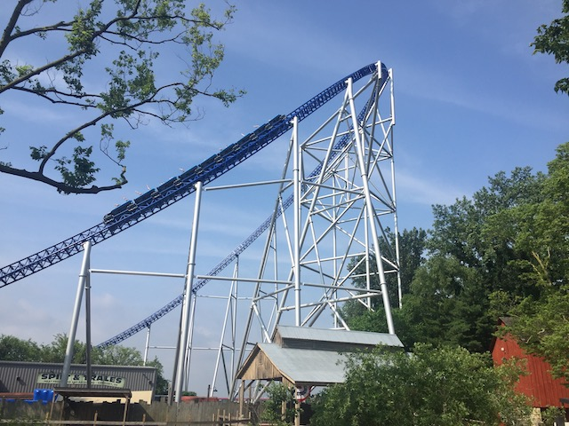
Hope you like that rushing sensation of speed, cause this ride ain't slowing down til the final brakes.
 *gasp* A pop of mild airtime! There is airtime on this ride after all!
*gasp* A pop of mild airtime! There is airtime on this ride after all!
 Speed and overbanked turns. That really is what Millenium Force is all about. =P
Speed and overbanked turns. That really is what Millenium Force is all about. =P
Why is it whenever they talk about Cedar Point, it's always about the roller coasters. Maverick this. Steel Vengeance that. When do they ever talk about the petting zoo!? ='(
Speaking of which, time for me to get on my favorite rides.
Despite all the many amazing coasters I've ridden since my last visit, Maverick still is a solid favorite that still makes it on my Top 10 Steel Coasters.
It still has a really nice variety of elements including some EJECTOR AIR and INSANE LATERALS!!!
The trend of this trip being a highlights reel of the best coasters in America continues.
And there's my other favorite coaster at Cedar Point. Have to stop on by you too.
OK. So since my last visit, Steel Vengeance added these lockers. So basically, at the very end of the line, you have to empty out your pockets (Because Cedar Point has apparently forgotten the physics behind zippers) and they got rid of the zippered pouches on the train. F*CK!!!! NO!!!! Why didn't they at least do the compromise that they did on Twisted Timbers. I genuinely hate this....zipper intolerance that seems to have gained popularity (I think COVID played a role in this because....another thing guests touched. Ugh. Really dumb and not effective. Remove that ASAP. It didn't help). But hey. At least they only did this for the very end of the line when you make it to the station. At least they don't just keep you without your phone for the entire line *cough*Six Flags Great Adventure*cough*.
Model clearly only takes regular pockets into account and doesn't factor in zippers.
So Steel Vengeance seems to have lost a lot of the lust and wonder from other coaster enthusiasts as its been overshadowed by other major RMCs, such as Zadra, Hakugei (really need to get back to Nagashima Spaland for that), and Iron Gwazi (Soon. Hopefully this Fall).
Regardless of how those rides are (the more amazing RMCs, the better), Steel Vengeance is still an amazing ride and is still as of posting this update, my favorite RMC that I've ridden. The amount of amazing elements combined with its sheer length is just.....*drool* SO F*CKING GOOD!!!!
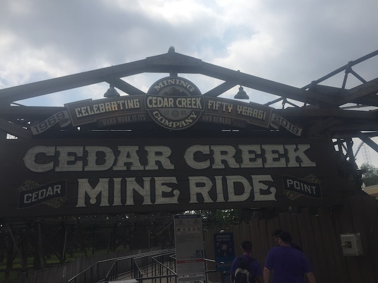
Fine. I know our time is limited since we're here for just one day (We have FastLane for obvious reasons). But I know you guys need that credit.
 It may be a lame mine train, but.....at least you guys get a new credit.
It may be a lame mine train, but.....at least you guys get a new credit.
 Hey. I've done far worse in the name of other friends credit whoring.
Hey. I've done far worse in the name of other friends credit whoring.
Hmm. I didn't think they had a memorial for Ronald Toomer here. That's cool I guess.
Cedar Creek Mining Company!? I thought this ride was made by Arrow! What's going on here?
This drink pass paid itself off so quickly.
 Oh yeah. Can't hit up Cedar Point and not do Gemini.
Oh yeah. Can't hit up Cedar Point and not do Gemini.
Love that this ride doesn't get a long line.
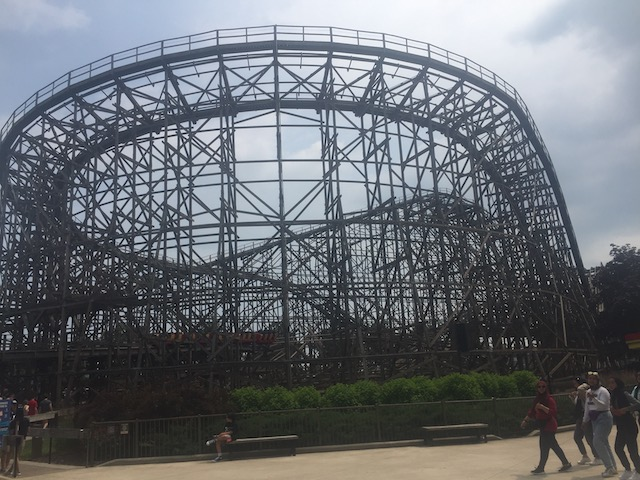
I seriously have to add this ride to the Underrated Coasters List. It just is such a fun ride that I keep forgetting about every time I leave Cedar Point.
Speaking of famous and influential coasters, we can't skip this one.
Yes. Magnum XL 200 was influential as the first ever Hyper Coaster. Moving on.
Hello Cedar Point view from Magnum XL 200's station.
I know this ride gets overshadowed by all the Hyper Coasters that have been built since it opened. But it's still a really fun ride.
I know it was running really well yesterday, but this is still better than Steel Force.
Those triangle airtime hills at the end are still really brutal in the best possible way.
 Oh yeah. Here's a major coaster we still haven't ridden today.
Oh yeah. Here's a major coaster we still haven't ridden today.
 I can not express just how much we lucked out on getting on Top Thrill Dragster and the timing of this trip considering all that's happened afterwards.
I can not express just how much we lucked out on getting on Top Thrill Dragster and the timing of this trip considering all that's happened afterwards.
 So on August 15, 2021 (about 2 months after this trip), an accident occured when an L-shaped bracket came off the train, striking a woman in the head and causing serious injuries (luckily, she survived despite the severity of the injury), resulting in the ride being closed ever since. Yeah. This isn't an example of a guest being stupid like that Lagoon accident. No, this is a completely not-at-fault, very serious injury.
So on August 15, 2021 (about 2 months after this trip), an accident occured when an L-shaped bracket came off the train, striking a woman in the head and causing serious injuries (luckily, she survived despite the severity of the injury), resulting in the ride being closed ever since. Yeah. This isn't an example of a guest being stupid like that Lagoon accident. No, this is a completely not-at-fault, very serious injury.
Top Thrill Dragster remained SBNO (and still is) when Cedar Point finally broke the silence and released this statement where they announced "Top Thrill Dragster as you know it, is being retired". Naturally, all the demolish-happy enthusiasts took this as a win for them since.....the announcement did say it was being retired (I swear to god. These enthusiasts seem ecstatic at the idea of coasters getting demolished. Super obnoxious). However, it did say "AS YOU KNOW IT". What that entails, I honestly have no idea. Does this mean that they're just tweaking it for safety and maintenence reasons and calling it a makeover Six Flags style? Or does this mean that they're genuinely going to build a new coaster in that spot and actually retire Top Thrill Dragster? I HAVE NO IDEA!!! This is one of the few instances where I'm completely blind and don't even have an educated guess as to what will happen to this ride. Your guess is as good as mine (and there is countless content on Youtube speculating about the future of Top Thrill Dragster and acting like they know everything and that their Youtube prediciton is gospel).
Now naturally, I hope that it's more of the first option where it's mostly mechanical tweaks where they keep the same basic ride concept, just making it more safe and reliable since....this ride is really good (I also am leaning more towards that if I had to make a guess).
After riding Kingda Ka a couple days ago, it's abundently clear that this is the superior ride (Insert demolish-happy enthusiasts talking about SFGADV popping champagne over the entire Top Thrill Dragster incident since it has no competition anymore).
And not only did we have great timing with the dates of the trip, but also us getting on Top Thrill Dragster today since....it began to rain shortly after we rode and being super finnicky, closed right after we rode.
You know what Top Thrill Dragster needs? More bulky parts that could fly off the train and strike people in the head. Yeah. We need more of that. >=)
OK. This ride is far less finnicky and sensitive. So....we're hopping on this.
 I didn't think reriding this would be a priority. But....others need that credit.
I didn't think reriding this would be a priority. But....others need that credit.
It may be old and clunky, but....I still had fun on it.
And of course, it still is iconic going over the midway.
Hey. That new BBQ resteraunt was really good. Cedar Point does a fantastic job with BBQ.
Ugh. Seriously guys? We're waiting this long for Rougarou?
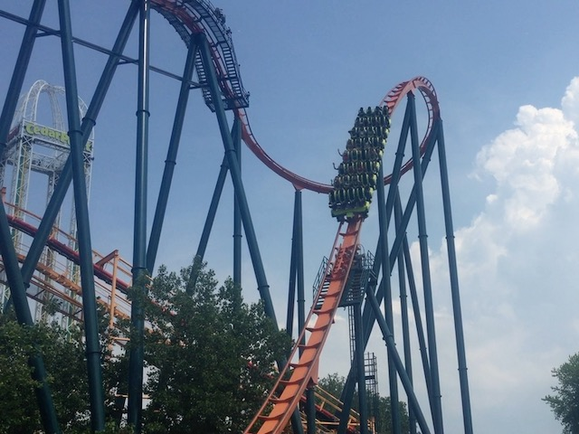
Well, at least was a much better ride on Rougarou than last time. And I'm not just saying that due to the lack of an insect shower.
No. This ride was made by some guy who was SUPER INTO the ride. He just kept cheering and screaming "WOO!!! ROUGAROU!!! ROUGAROU!!!". This dude was so into it that it amused me and....I think his enthusiasm was contagious. Almost wanted to shout it myself. Kind of reminded me of the tough gangster biker "PONY EXPRESS IS THE BEST RIDE EVER!!!" dude.
"ROUGAROU!!! ROUGAROU!!! WOO!!!" =)
Oh yeah. These rides are a dying breed. So we have to stop here.
 It may be the weakest model, but Arrow Suspendeds are so rare we couldn't not ride.
It may be the weakest model, but Arrow Suspendeds are so rare we couldn't not ride.
 I just have to say a quick "Thank you" to Six Flags Magic Mountain for keeping Ninja running and maintained. Cause not only is it rare, but Iron Dragon really makes me appreciate it a lot more.
I just have to say a quick "Thank you" to Six Flags Magic Mountain for keeping Ninja running and maintained. Cause not only is it rare, but Iron Dragon really makes me appreciate it a lot more.
OK. Time to take the skyride to the front of the park. I think there's something we've been neglecting.
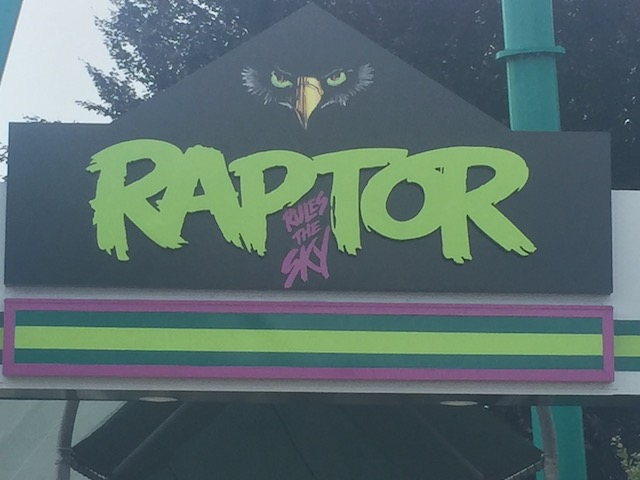
Yep. We've been neglecting poor Raptor. Best B&M at the park. So yeah. Gotta get on that.
 This ride may be overshadowed by the newer inverts, but Raptor still is a really solid B&M Invert and one of the better ones for sure.
This ride may be overshadowed by the newer inverts, but Raptor still is a really solid B&M Invert and one of the better ones for sure.
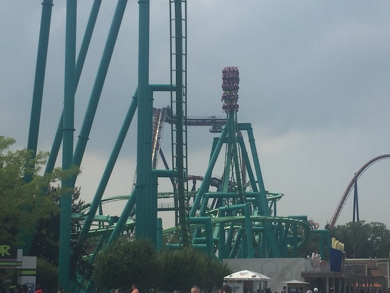
It's just a really forceful ride. Almost like a super-sized Batman.
 Best B&M with inversions in the state of Ohio.
Best B&M with inversions in the state of Ohio.
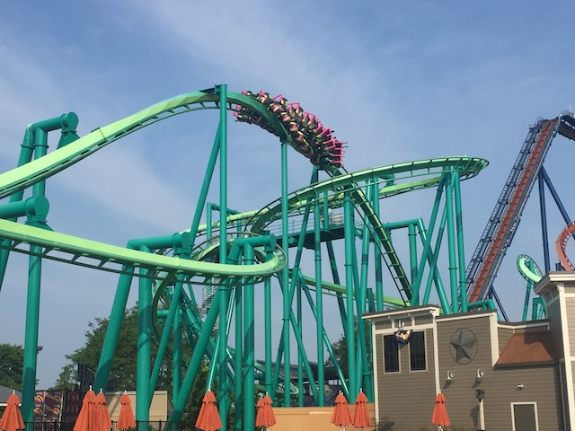
Yeah. That heartline spin just WHIPS you. Big thumbs up.
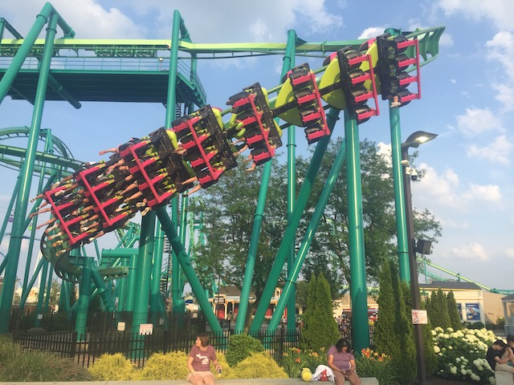
And yeah. The craziness continues in the 2nd half of the ride.
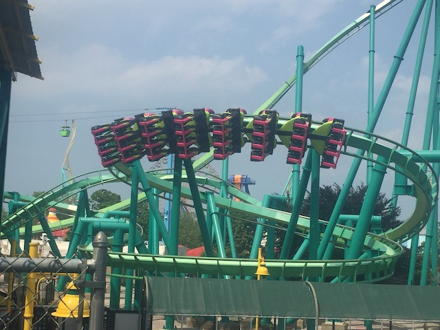
Super strong helix that really pours on the positive Gs.
I know I almost never prioritize carousels, but trust me. You're gonna wanna make an exception for this one.
Yeah. Best carousel ever. It's not even close.
Just in case you forgot where we are.
 OK. We still haven't done Blue Streak. Better get on that while we can.
OK. We still haven't done Blue Streak. Better get on that while we can.
It's not amazing or anything. But it is a fun ride worth a ride if the line is short.
Oldest coaster at Cedar Point and still one of the better ones.
 Hey. There's another big coaster we haven't ridden. Better hop in line for that.
Hey. There's another big coaster we haven't ridden. Better hop in line for that.
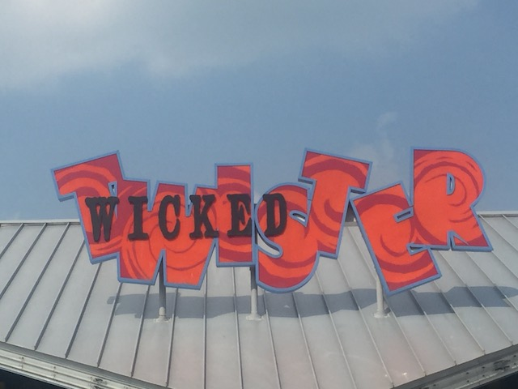
I've always had a soft spot for Impulse coasters and Wicked Twister in particular. So I'm happy to be in line of this.
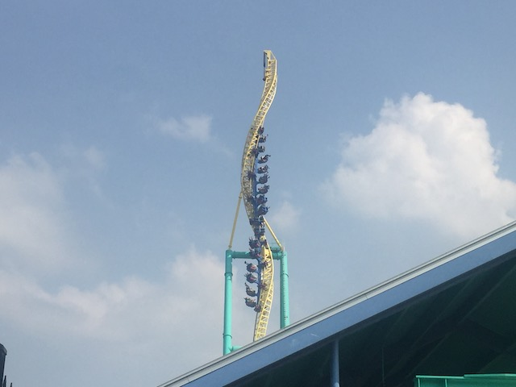
SON OF A BITCH!!! IT BROKE DOWN!!! And thanks to our limited time, we figured that we'd rather get some rerides on the star attractions than wait for Wicked Twister to reopen since...who knows how long that'd take. In hindsight, I wish I waited despite my favorites being on the other side of the park.
 So right at the end of the 2021 season, Cedar Point decided to retire Wicked Twister. I'm not too surprised by that. I had a hunch that it'd be leaving Cedar Point. What I was surprised at was the fact that it did not find a new home. It was just completely demolished for scrap metal. This both saddens me at the loss of a really fun ride and angers me in that their more neglected parks continue to not get jack-sh*t (Well, aside from Worlds of Fun, which is FINALLY getting a new coaster). I admit to being completely wrong about this. Well....hopefully they AT LEAST kept spare parts to extend the lives of Steel Venom and Voodoo since....those parks are already neglected. The last thing they need is one of their major coasters closing.
So right at the end of the 2021 season, Cedar Point decided to retire Wicked Twister. I'm not too surprised by that. I had a hunch that it'd be leaving Cedar Point. What I was surprised at was the fact that it did not find a new home. It was just completely demolished for scrap metal. This both saddens me at the loss of a really fun ride and angers me in that their more neglected parks continue to not get jack-sh*t (Well, aside from Worlds of Fun, which is FINALLY getting a new coaster). I admit to being completely wrong about this. Well....hopefully they AT LEAST kept spare parts to extend the lives of Steel Venom and Voodoo since....those parks are already neglected. The last thing they need is one of their major coasters closing.
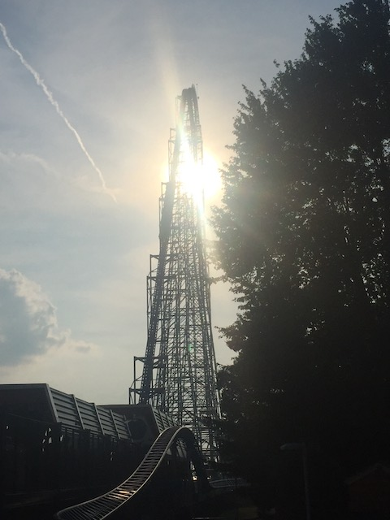
I'm not sure if it's just great operations, or if people are just flocking more towards Maverick & Steel Vengeance for obvious reasons, but the Millenium Force line is short enough for us to get a reride.
 It may be overrated, but man. That first drop still kicks ass.
It may be overrated, but man. That first drop still kicks ass.
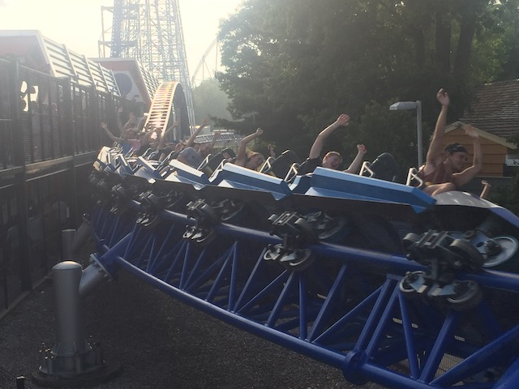
Hmm. Is this the best Giga Coaster in Ohio? Join us tomorrow as the answer will be revealed then.
Yeah. We just had to get rerides on both Maverick and Steel Vengeance since....best coasters at the park and some of the best in America.
So long Cedar Point. Hope to come back to your park soon. Not only will you have that Wild Mouse credit (it'll be a new credit. And it seems like a fun family coaster), but hopefully Top Thrill Dragster will be back up and running with all the flaws taken care of in their announced rennovation (I hope). Not sure when I'll be back next, but hopefully soon.
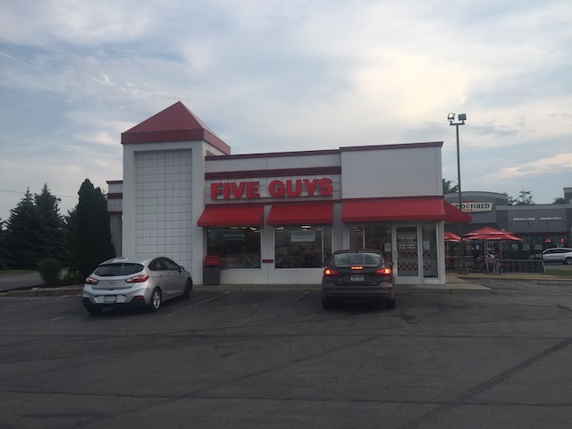
And for dinner, we stopped at Five Guys. We may have them at home, but we go so rarely due to their high prices. It's a constant battle of "Mmm. This place is really good. Why don't I eat here more often?" *checks receipt* "Oh, that's why". Well, at least it's really great to eat here once in a while.
Kings Island
Home
|